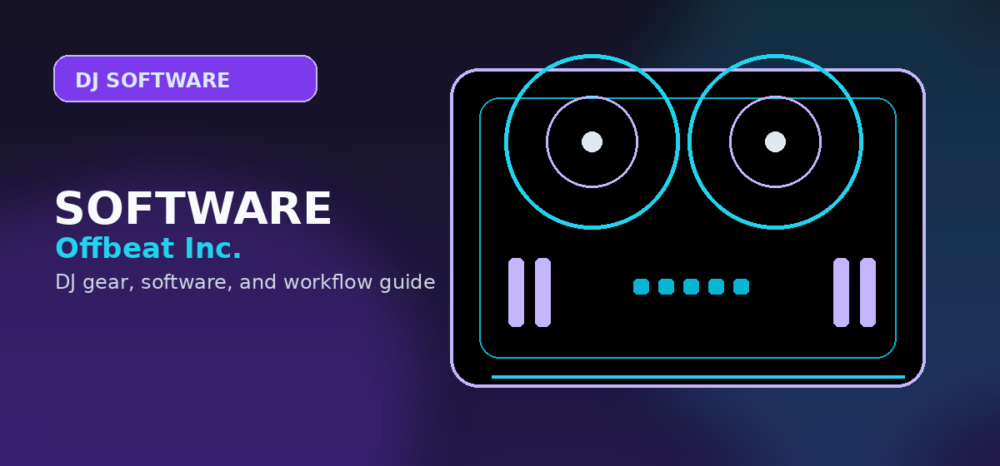

DJ Software for Apple Music
A current guide to DJ software and standalone hardware that can use Apple Music, including djay, rekordbox, Serato, Engine DJ, XDJ-AZ, and the practical limits DJs must understand.

Disclosure: This page uses affiliate links. We may earn a commission at no extra cost to you. Full disclosure →
A current guide to DJ software and standalone hardware that can use Apple Music, including djay, rekordbox, Serato, Engine DJ, XDJ-AZ, and the practical limits DJs must understand.
Apple Music DJ software: what actually matters
Apple Music support is now a real DJ-software decision point, not just a consumer-listening feature. The important editorial question is not only “does this app connect to Apple Music?” It is whether the buyer can load tracks on their actual device, use their controller, understand feature restrictions, and avoid building a paid-gig workflow on streaming assumptions that fail in the booth.
| App or system | Apple Music role | Best buyer | Key limitation to verify |
|---|---|---|---|
| djay Pro | Most consumer-friendly Apple Music path across desktop and mobile workflows | Casual DJs, phone/tablet users, party DJs, streaming-first beginners | Neural/stem-style features and recording can be restricted with streaming tracks. |
| rekordbox | Apple Music support inside the AlphaTheta/Pioneer DJ learning path | FLX2/FLX4/GRV6/XDJ-AZ users and CDJ-prep learners | Feature availability varies by plan, platform, and hardware. |
| Serato DJ Pro | Useful for open-format DJs who want streaming access in a performance app | Serato hardware users and mobile DJs testing requests | Streaming tracks may restrict recording, caching, or stem use. |
| Engine DJ / standalone systems | Relevant for Denon/Numark standalone workflows where supported | Standalone buyers who want streaming access without a laptop | Firmware, account login, and service-region support must be checked before purchase. |
| XDJ-AZ / OMNIS-DUO | High-ticket AlphaTheta standalone Apple Music path | Premium standalone buyers already committed to the ecosystem | Not a cheap way to “try DJing with Apple Music.” |
Best Apple Music DJ software choices
djay Pro
djay Pro is the simplest recommendation for someone whose main library lives in Apple Music and who wants to start from a Mac, Windows machine, iPad, iPhone, Android device, or compatible controller. It feels less like old-school DJ software and more like a modern app built around streaming access, fast setup, and casual-to-serious progression.
rekordbox
rekordbox is the better Apple Music route when the buyer also wants AlphaTheta/Pioneer hardware continuity. A reader looking at FLX2, FLX4, GRV6, OMNIS-DUO, or XDJ-AZ should compare rekordbox before assuming djay is the only Apple Music choice.
Serato DJ Pro
Serato belongs in the Apple Music conversation for open-format and controller-first DJs who already prefer its library, stems, and performance-pad workflow. It should not be positioned as the easiest Apple Music entry point, but it is important for users already in the Serato ecosystem.
What Apple Music does not replace
Apple Music compatibility does not mean a DJ owns a performance library. Streaming access can change by region, licensing, device, account status, app version, or hardware firmware. Professional DJs should still maintain verified local files for core sets, first dances, ceremonial songs, must-play requests, clean edits, and any event where failure is unacceptable.
Use Apple Music for
- Practice sets and casual parties.
- Fast discovery before buying/download-cleaning tracks.
- Testing requests and playlist concepts.
- Beginner learning before building a paid library.
Do not rely on it for
- Mission-critical wedding moments.
- Recording mixes where streaming recording is restricted.
- Offline gigs without verified service support.
- Stems-heavy routines unless the app explicitly supports it with that source.
Best hardware paths for Apple Music DJs
For cheap practice, start with software and a beginner controller like the FLX2 or FLX4. For premium standalone Apple Music workflows, compare the XDJ-AZ and OMNIS-DUO against Engine DJ systems before spending flagship money. A streaming feature is not enough to justify a standalone purchase by itself; the buyer should also want the layout, outputs, screens, and library workflow.
Apple Music buying guidance
Apple Music compatibility is useful, but it should not create a false sense of professional readiness. Apple Music can be a powerful discovery and practice source, especially for beginners who already maintain playlists there. It also gives software pages a fresh reason to discuss djay, rekordbox, Serato, Engine DJ, and standalone hardware in one place.
Apple Music should not be treated as a complete replacement for a prepared performance library. Streaming rights, account status, app limitations, regional catalog differences, and feature restrictions can affect a set. For casual use, this is acceptable. For weddings, clubs, corporate events, or recorded promo mixes, a DJ needs verified local files or a thoroughly tested service workflow with backups.
The most useful next steps are djay Pro for streaming-first users, rekordbox for AlphaTheta users, Serato for open-format users, and XDJ-AZ vs Prime 4+ for premium standalone buyers. This makes Apple Music a bridge page between software, controller, and standalone-system intent.
Apple Music workflow by DJ type
Apple Music DJ workflow limits
Apple Music support can make practice easier, but it does not replace a verified performance library. Treat it as a discovery and rehearsal source unless your exact software, hardware, account, and event needs are confirmed.
- Verify whether recording is restricted when streaming tracks are loaded.
- Check offline behavior before any event where internet access may be weak.
- Keep purchased or properly licensed local files for must-play songs, first dances, edits, and paid-event backups.
Frequently Asked Questions
Can you DJ with Apple Music?
Yes, Apple Music is supported in several current DJ software and hardware workflows, but the exact app, platform, account, feature, and hardware limits must be verified.
What is the best DJ software for Apple Music?
djay Pro is the easiest Apple Music-first app. rekordbox is stronger for AlphaTheta/Pioneer hardware users, and Serato is relevant for open-format Serato users.
Can you record DJ mixes with Apple Music tracks?
Do not assume recording is allowed. Streaming services often restrict recording or advanced processing with streamed tracks; verify inside the specific app before planning a recorded mix.
What should I check before choosing DJ software?
Check controller compatibility, library tools, streaming support, stem features, recording limits, subscription cost, and whether the software matches the venues or hardware you expect to use.
Can I start with free DJ software?
Yes, but free versions often restrict hardware, recording, effects, or advanced library features. Use free software to learn basics, then upgrade when the limitations slow you down.